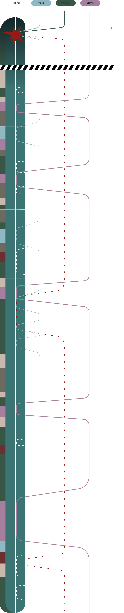

PERSONAGGI
Trevor
Trevor è un operaio che non riesce a dormire da un anno per via di una non meglio specificata causa; il suo fisico, stremato dalla mancanza di riposo e di energie, ha un aspetto ormai cadaverico e la sua mente comincia a giocargli brutti scherzi: vede un po' ovunque, infatti, un certo uomo di nome Ivan che inizia a perseguitarlo.
Stevie
Stevie è interpretata dall'attrice Jennifer Jason Leigh. Il personaggio di Stevie è una prostituta con cui il protagonista, Trevor Reznik, interagisce nel corso della trama del film.
Marie
Marie è interpretata dall' attrice Aitana Sánchez-Gijón. Il suo personaggio è una barista all' aereoporto e la madre del piccolo Nicholas di cui si innamora il protagonista Trevor
Nicholas
Nicholas è interpretato da Metthew Romero Moore. Il suo bersonaggio si palesa come figlio di Marie e anche se compare poche volte nel film ha un ruolo fondamentale.
Ivan
Ivan è interpretato da John Sharian. Il suo personaggio si presenta nel film come l'antagonista e l'alter ego di Trevor

THE MACHINIST SPOILER
SPIEGAZIONE
Il progetto infografico parte con l'intento di rendere chiaro allo spettatore l'intreccio del film, che in questo caso risulterebbe sufficientemente complesso: le linee dei personaggi principali scorrono con lo scrolling del sito e toccano la linea di Trevor (sempre in scena) nel momento in cui appaiono sullo schermo con lui, mentre le icone fanno saltare all’occhio il susseguirsi degli elementi ricorrenti. La sezione di infografica si conclude con una seconda mappa, la “versione spoiler” che non segue piu l’intreccio del film ma lo rilegge elevandosi dal punto di vista di Trevor e mostrandoci ciò che è veramente accaduto nella realtà. Il progetto si rivolge quindi principalmente a spettatori a dubbiosi che ne vogliono capire l'essenza: il potenziale di questo film risiede infatti proprio nell'essere estremamente calcolato e logico.